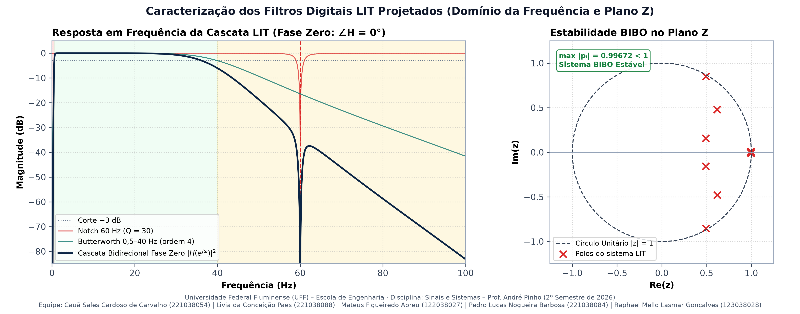
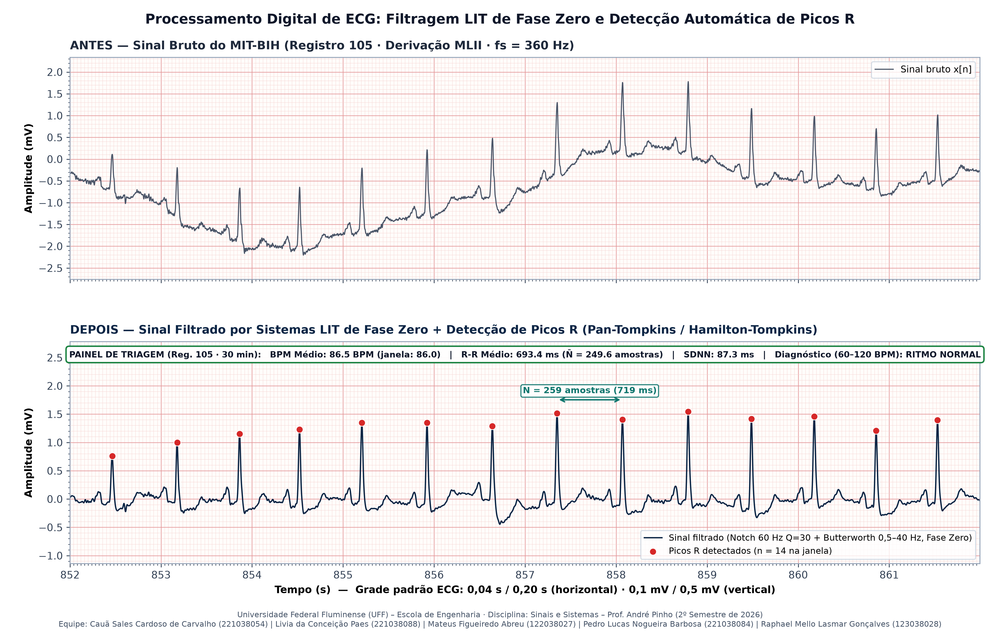
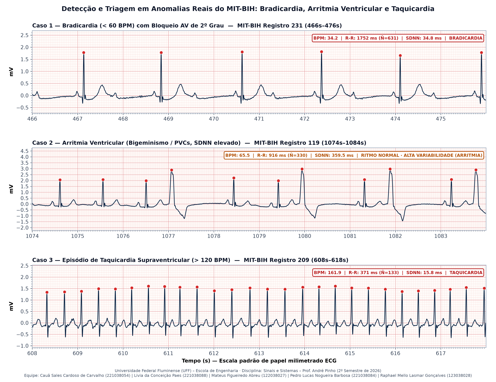

Suporte Computacional para Diagnóstico de Exames Biomédicos (ECG)
Filtragem digital por Sistemas LIT de fase zero, detecção automática de picos R, análise espectral (FFT/Parseval) e aplicação web aberta validada em 13.171 batimentos reais da base MIT-BIH.
O Problema Clínico Real (Levantamento em Campo)
Relatórios 2 & 3Principais Ruídos Relatados na Rotina
- Respiração do paciente: oscilação lenta da linha de base (< 0,5 Hz).
- Agitação e tremor muscular (EMG): artefatos de alta frequência (> 40 Hz).
- Interferência da rede elétrica: ruído senoidal estreito centrado em 60 Hz.
Dor Crítica: Distorção por Filtros Comerciais
- Aparelhos convencionais frequentemente deformam o pico R e o segmento ST devido a filtros causais com atraso de fase não linear.
- Demanda clínica: traçado limpo em papel milimetrado, cores claras, picos R destacados e painel imediato de BPM e regularidade.
Trajetória do Projeto (Ensino · Pesquisa · Extensão)
Escopo Aula 1Pesquisa Bibliográfica
Modelagem com δ[n], u[n], sistemas LIT e BIBO. Benchmarks: Pan & Tompkins (1985), Hamilton & Tompkins (1986), PhysioNet/MIT-BIH e Luz et al. (2016).
Entrevista & Crítica
Mapeamento dos ruídos clínicos e tradução direta para filtragem bidirecional de fase zero (0,5–40 Hz + Notch 60 Hz), periodicidade x[n]=x[n+N] e limiar 60–120 BPM.
Código & Validação Real
Pipeline em Python + App Web 60 FPS (FastAPI + GitHub Pages). Validação rigorosa em 6 registros completos do MIT-BIH (13.171 batimentos reais).
Devolutiva & Divulgação
Figuras 300 DPI, crítica clínica dos resultados, aplicativo público por QR Code para acesso aberto e demonstração ao vivo na apresentação.
Arquitetura de Processamento Digital de Sinais
Pipeline em CascataSinal Discreto x[n]
Base MIT-BIH (360 Hz, .dat/.hea/.atr) ou upload de .csv/.txt. Alerta automático para exames em .pdf já filtrados.
Notch + Butterworth
Notch 60 Hz (Q=30) + Butterworth 0,5–40 Hz (ordem 4) aplicados com filtfilt: zero deslocamento temporal.
Realce do QRS
Passa-faixa 5–15 Hz → Derivada 5 pontos (δ[n]=u[n]−u[n−1]) → Quadratura y² → Janela Móvel 150 ms.
Decisão Adaptativa
Limiares SPKI/NPKI, período refratário ≥ 200 ms, rejeição de onda T (200–360 ms) e search-back.
Triagem & Parseval
Período discreto N̄, R-R médio, BPM, SDNN, classificação (60–120 BPM) e espectro FFT + Parseval.
Sistemas LIT de Fase Zero e Estabilidade BIBO
Plano Z & Bode
Resultado Temporal: Antes × Depois em Papel Milimetrado
MIT-BIH Reg. 105
Análise Espectral (FFT) e Teorema de Parseval
Domínio da Frequência
Erro de identidade: 3,88 × 10⁻¹⁶
Validação Quantitativa no MIT-BIH vs. Literatura
13.171 Batimentos ReaisF1-Score por Registro MIT-BIH (30 min cada)
Comparação com a Literatura (Rel. 1)
| Estudo | Se (%) | +P (%) | F1 (%) |
|---|---|---|---|
| Pan & Tompkins (1985) | 99,75 | 99,54 | 99,64 |
| Hamilton & Tompkins (1986) | 99,69 | 99,77 | 99,73 |
| Luz et al. (2016) | > 99,0 | > 99,0 | > 99,0 |
| Nosso Algoritmo (6 reg.) | 99,80 | 99,09 | 99,44 |
FP/FN concentrados nos trechos de artefato extremo de eletrodo nos registros 105 e 108.
Detecção e Triagem em Anomalias Cardíacas Reais
Bradicardia · Arritmia · Taquicardia
1. Bradicardia (Reg. 231)
34,2 BPM · N̄ = 631 amostras · Bloqueio AV 2º grau (alerta < 60 BPM).
2. Arritmia / PVCs (Reg. 119)
65,5 BPM (normal), mas SDNN = 359,5 ms acusa perda de periodicidade!
3. Taquicardia (Reg. 209)
161,9 BPM · N̄ = 133 amostras · Episódio supraventricular (> 120 BPM).
Demonstração Ao Vivo do Produto Computacional
60 FPS · Web + PythonRoteiro da Demonstração em Sala
- 1. Filtragem ao vivo (Reg. 105): ligar/desligar Notch 60 Hz e Butterworth 0,5–40 Hz em tempo real e alternar para Sobreposição Direta (prova visual da fase zero).
- 2. Monitor 60 FPS: arrastar traçado, dar zoom e ativar ▶ Reproduzir (25 mm/s).
- 3. Anomalias em 1 clique:
231(Bradicardia),119(SDNN > 350 ms) e209(Taquicardia 162 BPM). - 4. Upload real: importar
exemplo_ruidoso_mitbih.csve testar um.pdfpara demonstrar o aviso técnico automático.
Arquitetura Dupla (Local + GitHub Pages)
Roda tanto localmente com FastAPI + SciPy (exames completos de 30 min) quanto 100% no navegador via GitHub Pages usando nosso motor DSP em JavaScript puro — privacidade total e zero instalação!
https://rlasmar-uff.github.io/ECG-Digital/Análise Crítica, Limitações e Trabalhos Futuros
Rigor CientíficoLimitações Reconhecidas
- Suporte à triagem, não laudo final: mede frequência cardíaca e regularidade temporal (BPM/SDNN), mas não substitui avaliação médica completa de ondas P, PR, QT e isquemia.
- Dependência de sinal bruto x[n]: exames em PDF ou foto já passaram por filtros proprietários do aparelho — por isso a interface alerta e bloqueia análise espectral sobre PDFs.
- Artefatos extremos de eletrodo solto: saturações abruptas em
105e108respondem pela maioria dos 121 FP.
Evoluções Futuras
- Delineamento completo P-QRS-T: medição automática de intervalo PR, duração do QRS e desnível do segmento ST.
- Índice de Qualidade do Sinal (SQI): rejeição automática de trechos com desconexão de eletrodo.
- ECG de 12 derivações: correlação espacial entre múltiplos canais simultâneos.
- Classificação de arritmias por batimento: separação automática de batimentos normais (N), supraventriculares (S) e ventriculares (V).
Teste agora no seu celular ou navegador!
Escaneie o QR Code ao lado para explorar os 6 registros reais do MIT-BIH, testar os filtros LIT de fase zero, visualizar a FFT/Parseval e enviar arquivos de ECG diretamente no navegador.
Repo: https://github.com/rlasmar-uff/ECG-Digital
Obrigado! Aberto para perguntas e demonstração interativa.